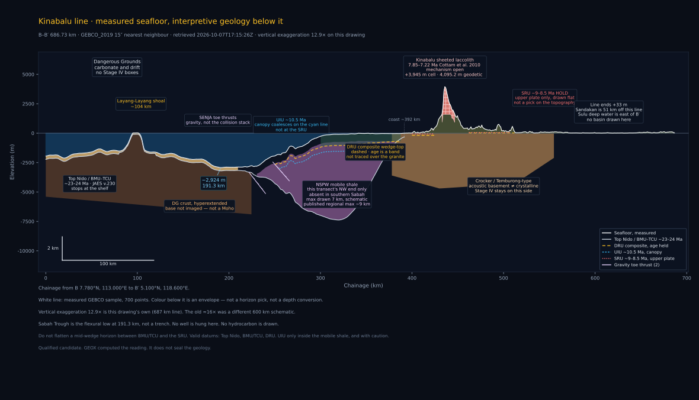
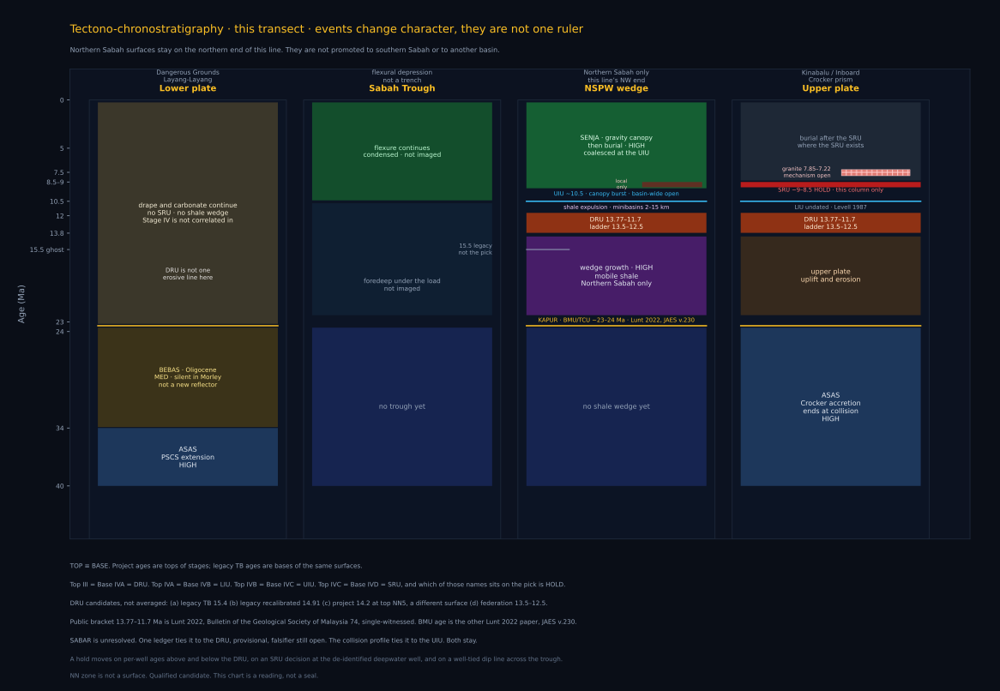

Geological cross-section — Kinabalu Basin
◈ Spatial Locator · NW–SE Transect B–B' (519 km geodesic; KL2 measured 687 km)

Previous figure, 8 Oct 2026, schematic seafloor: kinabalu-xs-v8.svg


ABKSS · events, not a ruler
- ~40–23ASAS — Paleogene to Early Miocene extension of the Proto-South China Sea. Crocker accretion on the upper plate. High.
- OligoceneBEBAS — intra-rift reorganisation. Medium. Morley does not name it. It is not drawn as a new reflector.
- ~23–24KAPUR · BMU/TCU — collision, Dangerous Grounds crust underthrust. Lunt 2022, Journal of Asian Earth Sciences v.230. The timing is still argued. This is not the DRU.
- openSABAR — one ledger ties the name to the DRU, and that tie is provisional. The collision profile ties it to the UIU. Both stay on the chart.
- 10.5–0SENJA — gravity-driven mud canopy, then burial. The canopy comes together at the UIU, in a burst shorter than 0.1 million years, not at the SRU.
Ages that are still open
- DRU — composite wedge-top on the upper plate, dashed where it is conformable (Morley et al. 2023). Public bracket 13.77–11.7 Ma, Lunt 2022, Bulletin of the Geological Society of Malaysia 74, one author. Federation ladder 13.5–12.5. Four candidates are on the chart and are not averaged. A legacy 15.5 Ma tick is shown and is not the pick.
- SRU ~9–8.5 Ma, hold. Kinabalu upper plate only. It dies downdip: onlap, then conformity, then nothing in the trough and nothing on Layang-Layang. Inboard readings sit nearer 9.4 Ma. The deepwater family sits nearer 8.3–8.5. Which stage name sits on the pick is also held.
- LIU — late Middle Miocene, Levell 1987, not re-dated. No age is invented for it. Top IVA and Base IVB are this surface.
- Granite — U–Pb zircon 7.85–7.22 Ma, sheeted laccolith, emplaced in under 800 thousand years (Cottam et al. 2010). Cooling path in Cottam et al. 2013. The mechanism is open. It is not “the Sabah orogeny”.
Same surface, two habits. Project ages are tops of stages. Legacy TB ages are bases. Top III = Base IVA = DRU. Top IVB = Base IVC = UIU. Top IVC = Base IVD = SRU. An NN zone is not a surface. A composite pick on an inversion high takes the deepest missing surface and stays out of single-surface age calibration.
Real Elevations · DEM-sampled (coarse)
- Mt Kinabalu: +3,945 m (GEBCO_2019 15″ cell) · 4,095.2 m Low's Peak geodetic (Sabah Parks) — grid attenuated, summit truth is geodetic
- Coast on this line: sign change at 391.6 km
- Crocker +900–1,025 m and central Sabah +300–630 m are coarse regional SRTM. They are not samples on this polyline. On the line, ground east and west of the summit is tens to a few hundred metres.
- Sabah Trough on this line: −2,924 m at 191.3 km. A flexural low in front of the wedge, not a trench, and not a claim about the whole trough axis.
- End of line, B′: +33 m at 5.100°N, 118.600°E. Sandakan is 51 km off the line. Deep Sulu water is east of B′ and is not drawn.
GEBCO cells are not point surveys. Low’s Peak, 4,095.2 m, is the geodetic summit and stands separate from the +3,945 m cell.
Wells · two readings, not merged
- Dossier cards: Megah-1 schematic position, real well. Tepat-1, Oligocene syn-rift gas, Layang-Layang. Well B, Stage IV post-DRU oil, Kinabalu. Well A, Stage IV gas and oil, Kinabalu Field. Well D, deeper pool, gas and oil, 2025, dossier v2.
- Map popups, projected onto the locator only: Tepat-1 “outer fold-thrust appraisal (2025)”. Well D “ultra-deepwater frontier, water deeper than 2,400 m, 2026”. Well A “mid-Miocene deltaic clastic pay”. Well B “toe-thrust anticline gas discovery”. Megah-1 “position schematic — the well is real”.
The two readings are left side by side. No well is hung on the section. There is no published chainage along the measured line.
Sabah deepwater · what changed by Oct 2026
- Megah-1 — 2025 oil discovery, Deepwater Block 3K. Industry estimates 200–300 MMboe; PETRONAS has published no official recoverable figure (Oilprice, 7 Oct 2026). Press calls it Malaysia’s largest oil find in ~20 years. OBS
- Megah-2 appraisal — drillship lined up to spud as of mid-Oct 2026 (Upstream 6 Oct: “imminently start drilling”). Rig attribution contested: Noble Viking (Global Energy Network, 7 Oct 2026) vs West Capella / Seadrill (Oilprice · Splash247 · IndexBox, 7 Oct 2026). Both carried; not merged. Early development work and FPSO procurement started Jan 2026 (GEN). No spud confirmation in the public record yet. OBS / CONTESTED
- TGS reprocessing — ~514 km² 3D over Megah, full-waveform inversion + depth imaging. Processing began Jul 2026; final data expected Apr 2027 (Oilprice; TGS award confirmed 1 Oct 2026). OBS
- Limbayong — FID taken; parallel development via the Excalibur cylindrical FPSO (MISC). Fugro completed a deepwater AUV geohazard survey over the Megah + Limbayong areas, 28 Sep 2026. OBS
- Next door — TotalEnergies preparing Jambuk-1 wildcat, Block 2K, Oligo-Miocene carbonate trend (GEN, 7 Oct 2026). Two campaigns, two operators, same province. OBS
Megah’s reservoir age and facies are not settled in the public record — this page carries Oligocene carbonate (dossier card) and Miocene turbidite (map layer) as separate readings. What would settle it: Megah-2 results + the TGS FWI volume, Apr 2027.
What this line is, and is not
- NSPW is the shale wedge on the northwest end of this transect only. It is absent in southern Sabah. Published size is regional: longer than 500 km, about 150 km wide, up to about 9 km thick (Morley et al. 2023; Morley 2024). The 7 km drawn here is a schematic thickness, not a depth conversion.
- Sabah Trough is flexure of hyperextended Dangerous Grounds crust under that load (Hall 2013). It is not a trench, and present-day Sundaland–Philippine Sea motion did not build NW Sabah.
- Toe thrusts drawn at the wedge front are gravity-driven SENJA structure. They are not a four-sheet collision fan.
- Stage IV is correlated outward from Kinabalu. Those boxes are not transferred to Layang-Layang.
- Kinabalu Field ~500 MMstb OOIP is Bait 2003, Bulletin of the Geological Society of Malaysia 47. A published figure, not a GEOX seal. Nothing on this section is a hydrocarbon.
Underthrust Dangerous Grounds crust beneath the wedge is an interpretation. A well-tied dip line across the trough would test it. This is the Sabah margin. The Malay Basin is a different basin and is not drawn.
◂ BACK TO DOSSIER · DOWNLOAD PDF v2 (OCT 2026) ↓ (the /earth/kinabalu-basin.pdf at the old link is the July v1 — superseded) · GEOX basin route re-checked 2026-10-15: page serves 200 (was 404 on 13 Oct); geox_basin MCP returns a Kinabalu profile. Still compute-only.